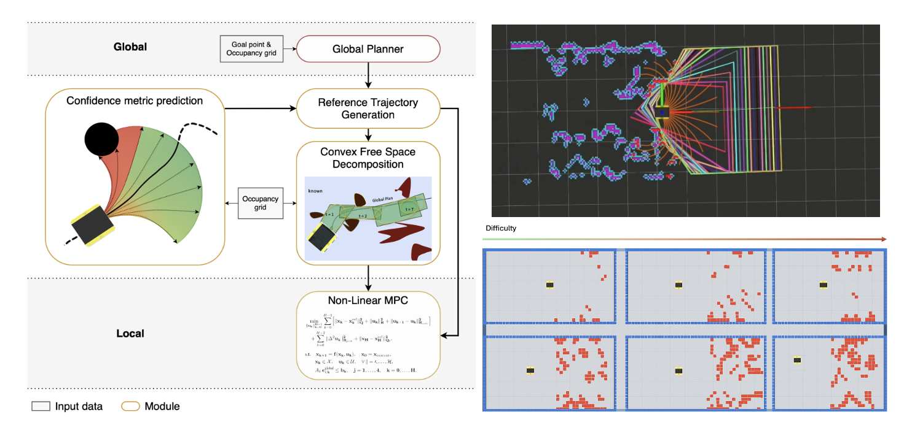
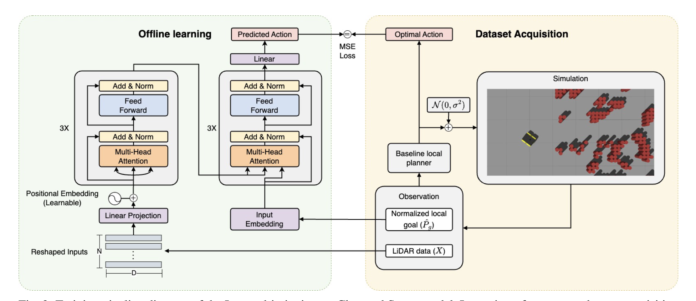
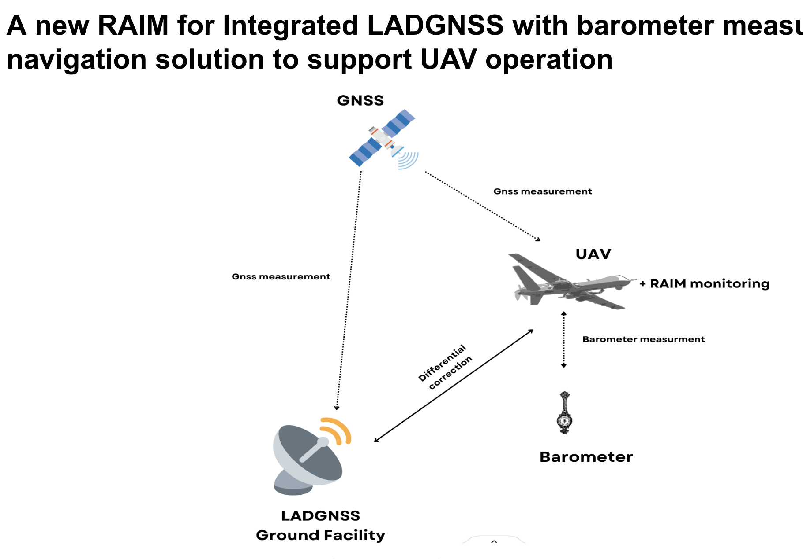

Sensitivity-Augmented Iterative Best-Response MPC in a Three Player Orbital Differential Game
AIAA Scitech 2026 • Accepted
I am a graduate research student pursuing a Master's degree in Aerospace Engineering at KAIST. As a member of the Laboratory for Information and Control Systems (LiCS), I am advised by Professor Hanlim Choi. My research focuses on control theory, optimization, and their applications to spacecraft GNC and robotics.
AIAA Scitech 2026 • Accepted

CAMSAT 2025 • Accepted


IEEE Robotics and Automation Letters • 2024

Korean Navigation Institute (KONI) Conference • 2023 • 🏆 Best Paper Award
Information about current and past projects will be updated here soon.
Feel free to reach out for collaborations, research discussions, or any inquiries.